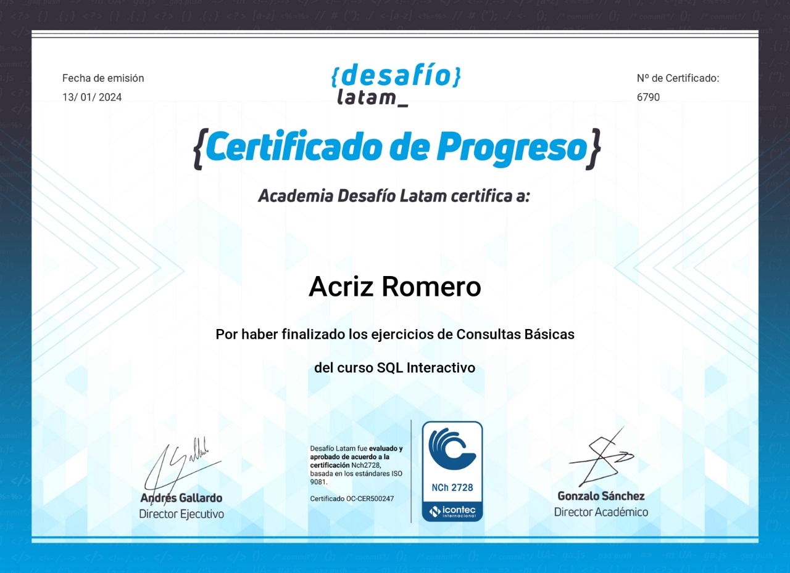

Curriculum Vitae Acriz Romero

|Tester QA | Analista QA| Desarrollador web | SQL |HTML | CCS | Ingeniero Marítimo|
Soy responsable, ordenada, comprometida, me adapto rápido, Autodidacta, me gustan los desafíos y pienso que todo es posible siempre que tengamos metas fijas que nos permitan alcanzar nuestros objetivos. A mediano- largo plazo quiero seguir adquiriendo mas experiencia como Tester manual y continuar con los estudios para ser tester de Automatización de pruebas.
Objetivo Laboral
Desarrollarme tecnológicamente para brindar servicios como Analista QA /Tester QA/ IT ya sea en consultoras de software o en compañías que tengan un equipo destinado a tal fin
Conocimientos:
- Revisión de historias de usuarios
- Diseño y ejecución de casos de prueba Funcionales manuales de Aplicaciones Web y Mobile
- Testing Exploratorio, Regression, smoke test, Sanity test.
- Consultas principales de Base de Datos con lenguaje SQL
- Reporte de defectos, Generar evidencias, Seguimiento de defectos
- JIRA, Trello
- Aplicaciones web con: HTML , CSS, Githup
- Transcripción de Documentos en PDF, Excel,
- Canva. Creación de logos, post, creación y edición de videos cortos.
Habilidades:
Proactiva, Organizada, Responsable, Entusiasta, Adaptabilidad.
Experiencia:
QA Tester Freelance
mayo de 2023 - Presente (9 meses) Argentina
-
Revisión de historias de usuarios, Diseño y ejecución de casos de prueba Funcionales manuales de
Aplicaciones Web y Mobil, Consultas principales de Base de Datos con lenguaje SQL, Reporte de defectos, Generar evidencias, Seguimiento de defectos, JIRA, Trello, Desarrollo de Aplicaciones web con: HTML , CSS, Githup, Transcripción de Documentos en PDF, Excel, Canva, Creación de logos, post, creación y edición de videos cortos.
- Dietética - Vendedora y atención al cliente.
septiembre de 2020 - mayo de 2022 (1 año 9 meses)
Argentina
- Peluqueria - Vendedora y peluquera
julio de 2018 - enero de 2020 (1 año 7 meses)
Argentina
- Inversiones Romer plas, CA
Atención al cliente y asistente de administración
enero de 2013 - junio de 2017 (4 años 6 meses)
Venezuela
- PDV Marina - Ingeniero Marítimo
marzo de 2007 - septiembre de 2012 (5 años 7 meses)
Venezuela
Tercer oficial de máquinas, Pruebas y mantenimientos en base a los
manuales de fabricante de bombas, Pruebas de purificadoras, Pruebas de
evaporadores, pruebas semanales los equipos de emergencia como motor
de rescate, bomba contraincendios de mercancía, válvulas de salto rápido,
guardias a bordo de buques mercantes. Gestión de inventarios con Excel.
Manejo del sistema de requisición de materiales.
Estudios
- Universidad marítima del Caribe - Ingeniero marítimo · (octubre de 2008)
- Desafío Lattam -Consultas Básicas de SQL· (diciembre de
2023 - enero de 2024)

- Codo a Codo 4.0 -
Fullstack con Python Programación informática · (julio de 2023 - diciembre de
2023)
- Argentina Programa -
Introducción a la Programación y Pensamiento Computacional, Programación
informática · (julio de 2023 - septiembre de 2023)

- Coderhouse - Tester QA. (diciembre 2023- febrero 2024)
Ir al inicio
Contacto